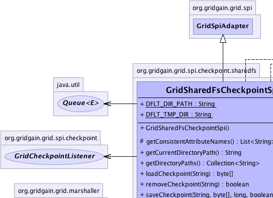
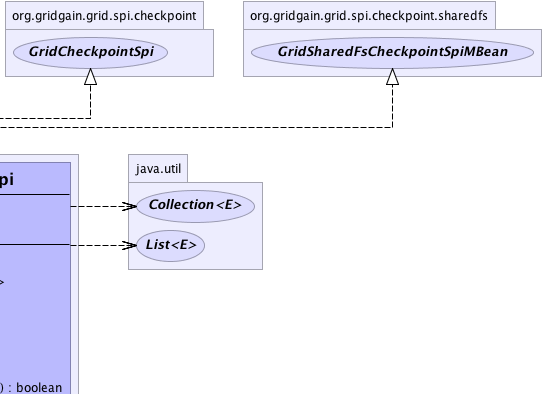
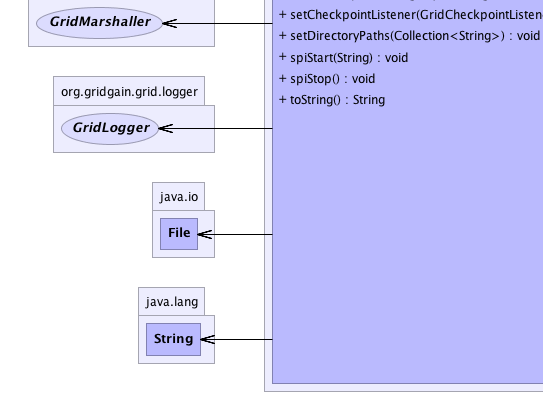
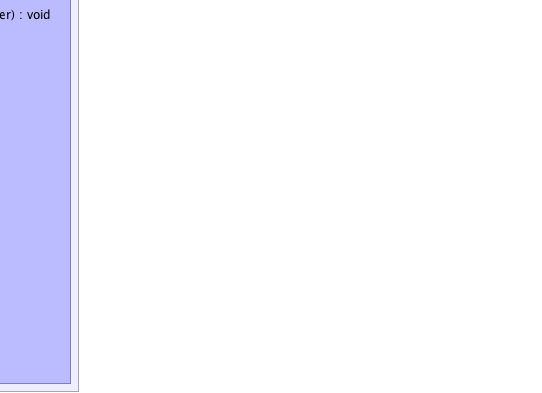

org.gridgain.grid.spi.GridSpiAdapter
org.gridgain.grid.spi.checkpoint.sharedfs.GridSharedFsCheckpointSpi
org.gridgain.grid.spi.GridSpiAdapter
org.gridgain.grid.spi.checkpoint.sharedfs.GridSharedFsCheckpointSpi
|
GridGain™ 3.6.0c
Community Edition |
|||||||||
| PREV CLASS NEXT CLASS | FRAMES NO FRAMES | |||||||||
| SUMMARY: NESTED | FIELD | CONSTR | METHOD | DETAIL: FIELD | CONSTR | METHOD | |||||||||
java.lang.Object
@GridSpiInfo(author="GridGain Systems",
url="www.gridgain.com",
email="support@gridgain.com",
version="3.6.0c.13012012")
@GridSpiMultipleInstancesSupport(value=true)
public class GridSharedFsCheckpointSpi
This class defines shared file system GridCheckpointSpi implementation for
checkpoint SPI. All checkpoints are stored on shared storage and available for all
nodes in the grid. Note that every node must have access to the shared directory. The
reason the directory needs to be shared is because a job state
can be saved on one node and loaded on another (e.g. if a job gets
preempted on a different node after node failure). When started, this SPI tracks
all checkpoints saved by localhost for expiration. Note that this SPI does not
cache data stored in checkpoints - all the data is loaded from file system
on demand.
Directory paths for shared checkpoints should either be empty or contain previously stored checkpoint files.
GridSharedFsCheckpointSpi.setDirectoryPaths(Collection))GridSharedFsCheckpointSpi can be configured as follows:
GridConfigurationAdapter cfg = new GridConfigurationAdapter(); GridSharedFsCheckpointSpi checkpointSpi = new GridSharedFsCheckpointSpi(); // List of checkpoint directories where all files are stored. CollectiondirPaths = new ArrayList (); dirPaths.add("/my/directory/path"); dirPaths.add("/other/directory/path"); // Override default directory path. checkpointSpi.setDirectoryPaths(dirPaths); // Override default checkpoint SPI. cfg.setCheckpointSpi(checkpointSpi); // Starts grid. G.start(cfg);
GridSharedFsCheckpointSpi can be configured from Spring XML configuration file:
<bean id="grid.custom.cfg" class="org.gridgain.grid.GridConfigurationAdapter" singleton="true">
...
<property name="checkpointSpi">
<bean class="org.gridgain.grid.spi.checkpoint.sharedfs.GridSharedFsCheckpointSpi">
<!-- Change to shared directory path in your environment. -->
<property name="directoryPaths">
<list>
<value>/my/directory/path</value>
<value>/other/directory/path</value>
</list>
</property>
</bean>
</property>
...
</bean>

For information about Spring framework visit www.springframework.org
| Wiki | |
| Forum |
GridCheckpointSpi
|  |  |
|  |  |
| Field Summary | |
|---|---|
static String |
DFLT_DIR_PATH
Default checkpoint directory (value is work/checkpoint/sharedfs). |
static String |
DFLT_TMP_DIR
Default directory name for SPI when GRIDGAIN_HOME not defined. |
| Constructor Summary | |
|---|---|
GridSharedFsCheckpointSpi()
Initializes default directory paths. |
|
| Method Summary | |
|---|---|
protected List<String> |
getConsistentAttributeNames()
Returns back a list of attributes that should be consistent for this SPI. |
String |
getCurrentDirectoryPath()
Gets path to the directory where all checkpoints are saved. |
Collection<String> |
getDirectoryPaths()
Gets collection of all configured paths where checkpoints can be saved. |
byte[] |
loadCheckpoint(String key)
Loads checkpoint from storage by its unique key. |
boolean |
removeCheckpoint(String key)
This method instructs the checkpoint provider to clean saved data for a given key. |
boolean |
saveCheckpoint(String key,
byte[] state,
long timeout,
boolean overwrite)
Saves checkpoint to the storage. |
void |
setCheckpointListener(GridCheckpointListener lsnr)
Sets the checkpoint listener. |
void |
setDirectoryPaths(Collection<String> dirPaths)
Sets path to a shared directory where checkpoints will be stored. |
void |
spiStart(String gridName)
This method is called to start SPI. |
void |
spiStop()
This method is called to stop SPI. |
String |
toString()
|
| Methods inherited from class org.gridgain.grid.spi.GridSpiAdapter |
|---|
assertParameter, checkConfigurationConsistency, configInfo, createSpiAttributeName, getAuthor, getGridGainHome, getLocalNodeId, getName, getNodeAttributes, getSpiContext, getStartTimestamp, getStartTimestampFormatted, getUpTime, getUpTimeFormatted, getVendorEmail, getVendorUrl, getVersion, injectables, onContextDestroyed, onContextInitialized, registerMBean, setJson, setName, startInfo, startStopwatch, stopInfo, unregisterMBean |
| Methods inherited from class java.lang.Object |
|---|
clone, equals, finalize, getClass, hashCode, notify, notifyAll, wait, wait, wait |
| Methods inherited from interface org.gridgain.grid.spi.GridSpi |
|---|
getName, getNodeAttributes, onContextDestroyed, onContextInitialized |
| Methods inherited from interface org.gridgain.grid.spi.GridSpiManagementMBean |
|---|
getAuthor, getGridGainHome, getLocalNodeId, getName, getStartTimestamp, getStartTimestampFormatted, getUpTime, getUpTimeFormatted, getVendorEmail, getVendorUrl, getVersion |
| Field Detail |
|---|
public static final String DFLT_DIR_PATH
work/checkpoint/sharedfs).
Note that this path used relatively GRIDGAIN_HOME directory when GRIDGAIN_HOME exists.
For unknown GRIDGAIN_HOME used another directory GridSharedFsCheckpointSpi.DFLT_TMP_DIR
public static final String DFLT_TMP_DIR
GRIDGAIN_HOME not defined.
This directory name relative to file path in java.io.tmpdir system property value.
| Constructor Detail |
|---|
public GridSharedFsCheckpointSpi()
| Method Detail |
|---|
public Collection<String> getDirectoryPaths()
getDirectoryPaths in interface GridSharedFsCheckpointSpiMBeanpublic String getCurrentDirectoryPath()
getCurrentDirectoryPath in interface GridSharedFsCheckpointSpiMBean@GridSpiConfiguration(optional=true) public void setDirectoryPaths(Collection<String> dirPaths)
GRIDGAIN_HOME system
or environment variable.
If not provided, default value is GridSharedFsCheckpointSpi.DFLT_DIR_PATH.
dirPaths - Absolute or GridGain installation home folder relative path where checkpoints
will be stored.
public void spiStart(String gridName)
throws GridSpiException
spiStart in interface GridSpiGridSpiException - Throws in case of any error during SPI start.gridName - Name of grid instance this SPI is being started for
(null for default grid).
public void spiStop()
throws GridSpiException
Note that this method can be called at any point including during recovery of failed start. It should make no assumptions on what state SPI will be in when this method is called.
spiStop in interface GridSpiGridSpiException - Thrown in case of any error during SPI stop.
public byte[] loadCheckpoint(String key)
throws GridSpiException
loadCheckpoint in interface GridCheckpointSpiGridSpiException - Thrown in case of any error while loading
checkpoint data. Note that in case when given key is not
found this method will return null.key - Checkpoint key.
null if there is no data for a given
key.
public boolean saveCheckpoint(String key,
byte[] state,
long timeout,
boolean overwrite)
throws GridSpiException
saveCheckpoint in interface GridCheckpointSpiGridSpiException - Thrown in case of any error while saving
checkpoint data.key - Checkpoint unique key.state - Saved data.timeout - Every intermediate data stored by checkpoint provider
should have a timeout. Timeout allows for effective resource
management by checkpoint provider by cleaning saved data that are not
needed anymore. Generally, the user should choose the minimum
possible timeout to avoid long-term resource acquisition by checkpoint
provider. Value 0 means that timeout will never expire.overwrite - Whether or not overwrite checkpoint if it already exists.
true if checkpoint has been actually saved, false otherwise.public boolean removeCheckpoint(String key)
key.
removeCheckpoint in interface GridCheckpointSpikey - Key for the checkpoint to remove.
true if data has been actually removed, false
otherwise.public void setCheckpointListener(GridCheckpointListener lsnr)
setCheckpointListener in interface GridCheckpointSpilsnr - The listener to set or null.protected List<String> getConsistentAttributeNames()
getConsistentAttributeNames in class GridSpiAdapterpublic String toString()
toString in class Object
|
GridGain™ 3.6.0c
Community Edition |
|||||||||
| PREV CLASS NEXT CLASS | FRAMES NO FRAMES | |||||||||
| SUMMARY: NESTED | FIELD | CONSTR | METHOD | DETAIL: FIELD | CONSTR | METHOD | |||||||||
|
GridGain - Real Time Big Data
|
|

|
|